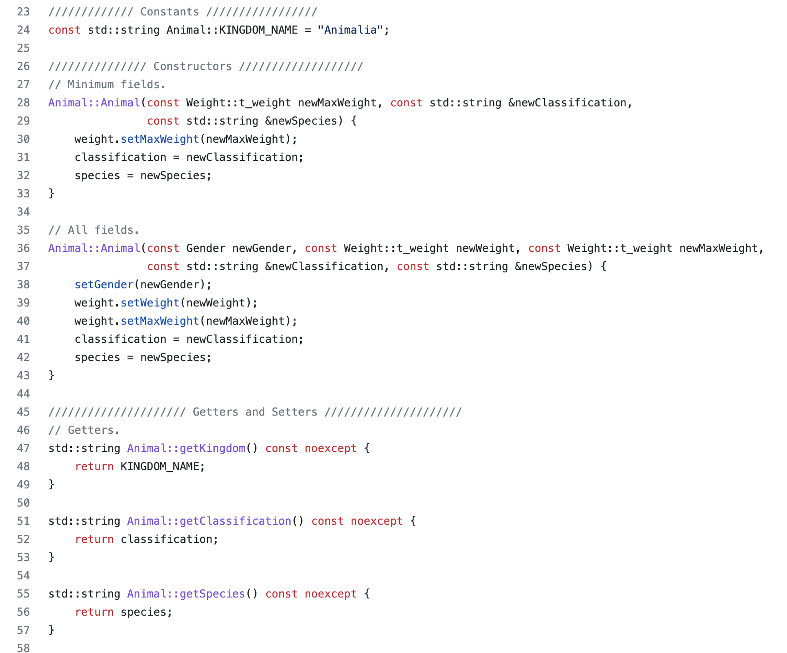

Animal Farm is a project intended to teach the basics of C and C++ in EE 205 or Object Oriented Programming at the University of Hawaii. Every week or two, a new version of Animal Farm was expected to be pushed to Github with more advanced requirements each time. Throughout the course of the project, I was able to learn how to refactor and improve source files. Initially, we wrote Animal Farm in C and later used CLion to refactor the code to represent the animals on the farms as objects. Towards the latter half of the project, I was introduced to README files, makefiles, and Doxygen notation. The different versions of Animal Farm were as follows:
My role during this project was a student learning how to code in C and C++ for the first time. I was responsible for all of the work on this project because each individual student worked on their own code and repository. I was responsible for reading a very long document explaining the different tasks and requirements of each Animal Farm. Once my code was working properly or produced matching outputs to what was listed in the document, I pushed the files to Git and Github.
From this project, I learned the importance of knowing a language well since the documentation used many keywords that were associated with certain features of the language. I also learned how to manage my time better. The new versions of Animal Farm were due once every few weeks and on top of that, we had smaller assignments and other classes to manage. I was able to learn how to work more efficiently by finding a quiet working environment and when I worked best.
